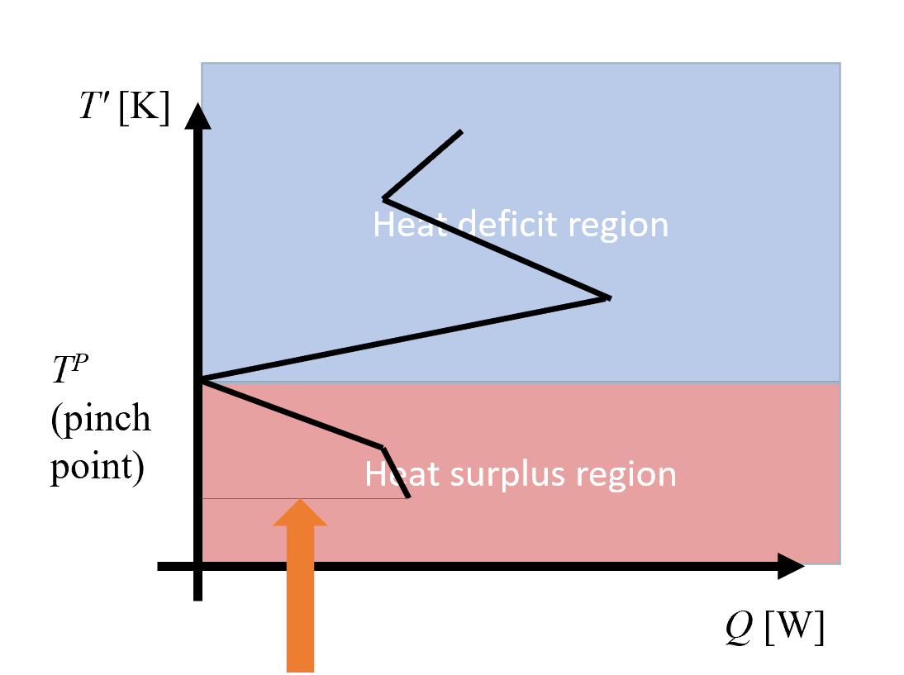

Background
Heat integration
Process integration is a useful tool for benchmarking the potential for heat recovery in a system. It was first conceptualized through Pinch Analysis, a method that revolves around finding the process pinch point where the hot and cold composite curves converge. At the pinch point the process can be decoupled into two parts; a heat deficit region above pinch and a heat surplus region below. Consequently, any heat transfer across the pinch constitutes taking heat from the heat surplus region and supply it to the heat deficit region. One therefore can maximize heat recovery by eliminating any existing cross pinch heat transfer. More times than not, however, the maximum energy recovery (MER) design serves as an upper limit to heat integration that would require significant capital investments to realize. Meanwhile, the actual best design is very much dependent on the application and weighs capital expenditures to heat recovery. Although originally based on a manual procedure, mathematical optimization has since found its way into the heat integration community, and today many automated pinch location algorithms exist in the literature [4–8].
The oldest and among the most well known pinch location algorithms is the transshipment model by Papoulias and Grossmann [9]. The transshipment model formulates the heat integration target as a linear program (LP) that lumps the individual stream contributions into heat residuals that cascades down the temperature intervals. The maximum energy recovery (MER) design is the arrangement with the least hot utility supply (see Equations PAPOULIAS and HEATINTERVAL). Though inherently more simplistic than the pinch location algorithms listed above, the transshipment model benefits from its auspicious linear formulation and favourable scaling.
\[\tag{PAPOULIAS} \begin{aligned} & \underset{r_i}{\text{minimize}} & & r_0\\ & \text{subject to} & & r_i = r_{i-1} + q_i, \quad \forall i\in M,\\ & & & r_i \geq 0, \quad \forall i\in M, \\ \end{aligned}\]
where $r_i$ are the heat residuals in temperature interval $i$, M is total number of streams, and $q_i$ is the surplus heat as given by
\[\tag{HEATINTERVAL} q_i = \sum_{m\in H} F_m(T_{i-1} - T_i) - \sum_{n\in C}f_n(t_{i-1}-t_i).\]
In Equation (HEATINTERVAL), $F$, $T$, $f$ and $t$ denote the heat capacity flowrates and temperatures of the respective hot and cold streams. The heat residual at a given temperature interval corresponds to the surplus heat available at this temperature.

The transition model relies on temperatures and heat capacity flowrates being known and fixed throughout. In an optimization model, it would therefore make sense to nest the transshipment model in a separate subroutine that calculates the heat residuals prior to optimizaiton of the overall model. Although the model is normally applied to find the optimal use of heat utilities (minimize external utility consumption), the model has the advantage of mapping the residual heat present at different temperature intervals. In other words, the transshipment model can also be used to calculate the heat available or heat necessary at a given temperature. This can be useful in cases where we look at trans-process heat integration or heat recovery in different clusters. Even though the fixed temperatures and heat capacity flowrates present inherent limitations to the implementation of the model, there is a way to bypass it, when looking at trans-process heat integration. In the Intercur model, which was developed with heat integration of industrial clusters in mind, a slight alteration was made to the model, where the heat capacity flowrates were formulated as $F =\frac{mCp}{n_\textrm{product}}$ where $n_\textrm{product}$ is used to represent one unit of output product. In this case, the transshipment model maps the available heat/heat needed per unit output product. As for the fixed temperature intervals, this too can be circumvented in cases where the possible discrete temperature intervals are known a priori by adding a binary decision variable for whether the given temperature intervals are active or not.
References
- [1]
- K. Kvalsvik and K. Hanne. Linear optimization of district heating systems. Description of an upgraded district heating module for eTransport (ZEN Research Centre, 2018).
- [2]
- A. Dalla Rosa, H. Li and S. Svendsen. Method for optimal design of pipes for low-energy district heating, with focus on heat losses. Energy 36, 2407–2418 (2011).
- [3]
- H. Kauko, D. Pinel, I. Graabak and O. Wolfgang. Assessing the potential of seasonal thermal storage for local energy systems: Case study for a neighborhood in Norway. Smart Energy 6, 100075 (2022).
- [4]
- M. A. Duran and I. E. Grossmann. Simultaneous optimization and heat integration of chemical processes. AIChE Journal 32, 123–138 (1986).
- [5]
- I. E. Grossmann, H. Yeomans and Z. Kravanja. A rigorous disjunctive optimization model for simultaneous flowsheet optimization and heat integration. Computers & chemical engineering 22, S157–S164 (1998).
- [6]
- N. Quirante, J. A. Caballero and I. E. Grossmann. A novel disjunctive model for the simultaneous optimization and heat integration. Computers & Chemical Engineering 96, 149–168 (2017).
- [7]
- N. Quirante, I. E. Grossmann and J. A. Caballero. Disjunctive model for the simultaneous optimization and heat integration with unclassified streams and area estimation. Computers & Chemical Engineering 108, 217–231 (2018).
- [8]
- C. J. Nielsen and P. I. Barton. A Generalized, Nonsmooth Operator for Process Integration. In: Computer Aided Chemical Engineering, Vol. 46 (Elsevier, 2019); pp. 385–390.
- [9]
- S. A. Papoulias and I. E. Grossmann. A structural optimization approach in process synthesis—II: Heat recovery networks. Computers & Chemical Engineering 7, 707–721 (1983).